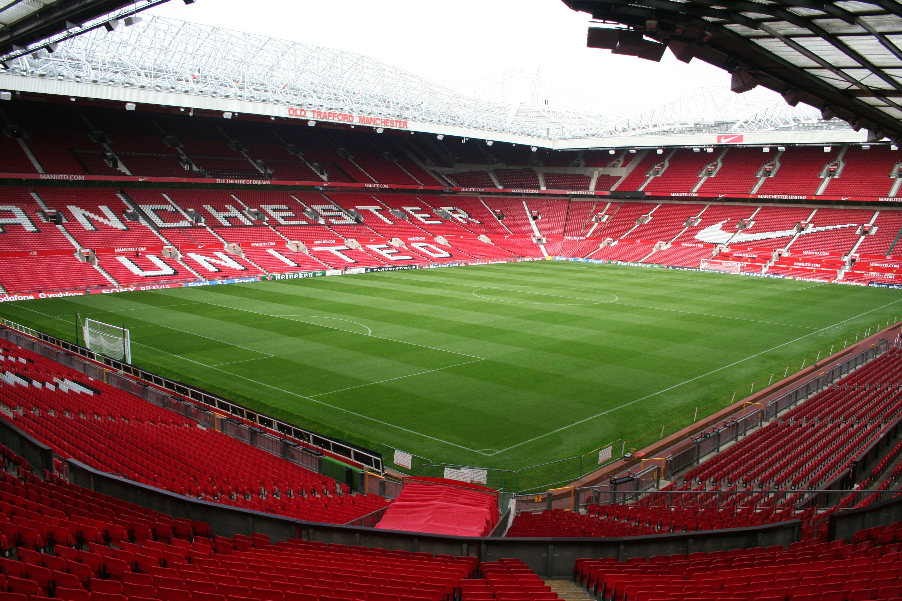

Esittely
Manchester United on kuuluisa jalkapalloseura Englannista, Manchesterin kaupungista. Se perustettiin vuonna 1878 nimellä Newton Heath LYR Football Club, ja otti nykyisen nimensä vuonna 1902. Seuran värit ovat punainen ja valkoinen, ja se tunnetaan nimellä "Punaiset paholaiset" (engl. Red Devils).
Manchester United on voittanut 20 Englannin mestaruutta, 12 FA Cupia, 6 liigacupia ja 3 Mestarien liigaa. Se on yksi maailman tunnetuimmista ja suosituimmista jalkapalloseuroista, jolla on miljoonia faneja ympäri maailmaa.
Old Trafford -stadion
Old Trafford – paikka, jossa historia elää.
Old Trafford sijaitsee Stretfordin alueella Manchesterissa. Stadion avattiin vuonna 1910, ja sen kapasiteetti on noin 74 310 katsojaa. Se on Englannin suurin seurajalkapallostadion ja tunnetaan lempinimellä “The Theatre of Dreams”.
Tärkeitä pelaajia
- Bruno Fernandes – Joukkueen kapteeni ja keskikentän aivot. Tunnetaan luovista syötöistä ja johtajuudesta.
- Marcus Rashford – Nopea laitahyökkääjä, Manchesterissa syntynyt pelaaja. Tunnetaan hyvistä viimeistelyistä ja nopeudesta.
- Casemiro – Kokeneempi keskikenttäpelaaja, joka tuo tasapainoa ja voimaa peliin.
- Lisandro Martínez – Argentiinalainen puolustaja, rohkea ja teknisesti taitava.
- André Onana – Kamerunilainen maalivahti, joka tunnetaan pallonhallintataidoistaan ja nopeista reaktioistaan.
Historia ja saavutukset
| Vuosi | Saavutus | Kuvaus |
|---|---|---|
| 1968 | Ensimmäinen Euroopan mestaruus | United voitti Benfican 4–1 ja tuli ensimmäiseksi englantilaiseksi seuraksi, joka voitti Euroopan Cupin. |
| 1999 | Triplamestaruus | Voitti Valioliigan, FA Cupin ja Mestarien liigan samana vuonna. Legendaarinen kausi Sir Alex Fergusonin johdolla. |
| 2008 | Mestarien liigan voitto | United voitti Chelsean finaalissa rangaistuspotkuilla Moskovassa. |
| 2017 | Eurooppa-liigan mestaruus | United voitti Ajaxin 2–0 ja täydensi pokaalikokoelmansa. |
Nykyhetki
Nykyään Manchester United pelaa Valioliigassa ja tavoittelee paluuta huipulle uuden sukupolven pelaajien avulla. Seura panostaa nuoriin lahjakkuuksiin, kuten Kobbie Mainoo ja Alejandro Garnacho, ja pyrkii yhdistämään kokemuksen ja nuoruuden energian.
Oma mielipide
Pidän Manchester Unitedista, koska seura on täynnä historiaa, intohimoa ja uskollisia faneja. Joukkue ei koskaan luovuta, ja sen motto “Youth, Courage, Greatness” kertoo sen hengen täydellisesti. Minusta Manchester United on enemmän kuin jalkapalloseura – se on perhe.